Al juzgar a un dictador no se interviene contra una persona o un país concretos , sino contra quien ha despreciado unos valores que nos atañen a todos.
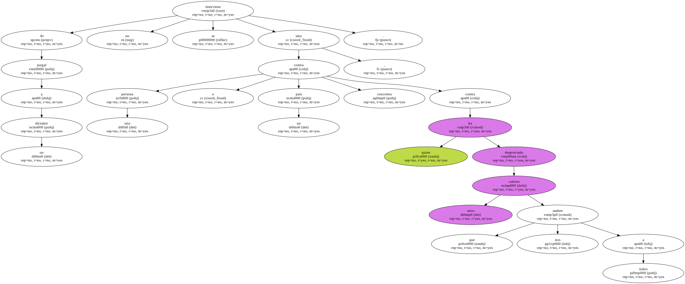El derecho a la vida y la dignidad es universal.
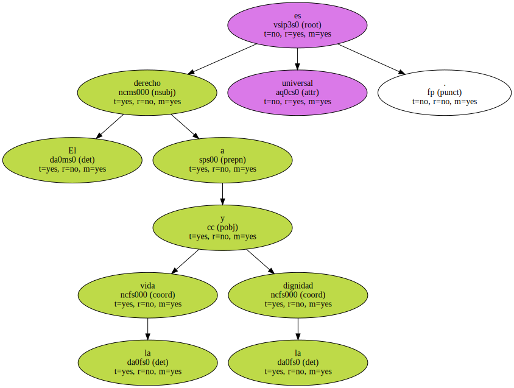La cuestión planteada por el encausamiento del general chileno Augusto Pinochet va más allá de la persona o el país del que se trata en este caso concreto.
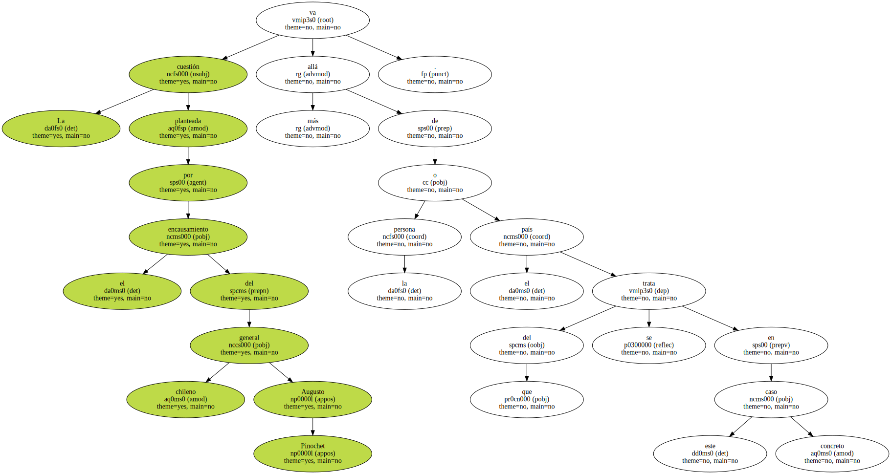Lo que está en juego en realidad es la responsabilidad internacional de los dirigentes políticos cuando en el ejercicio de su cargo han violado los principios contenidos en la Declaración Universal de Derechos Humanos.
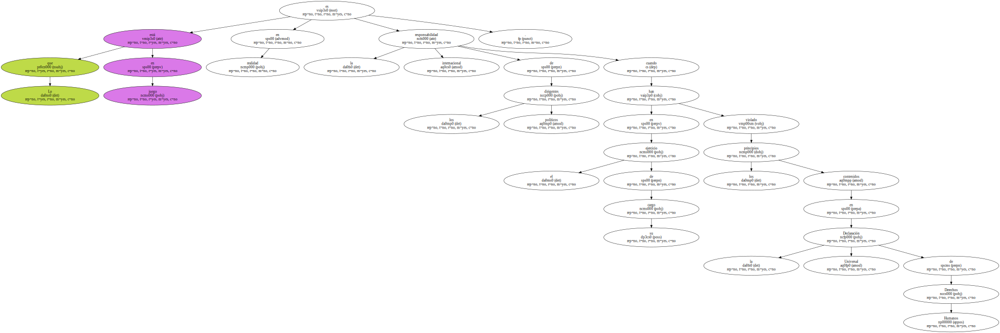La discusión , más allá de las fronteras concretas de los países , debe centrarse en la responsabilidad en la que incurren los regímenes no democráticos.
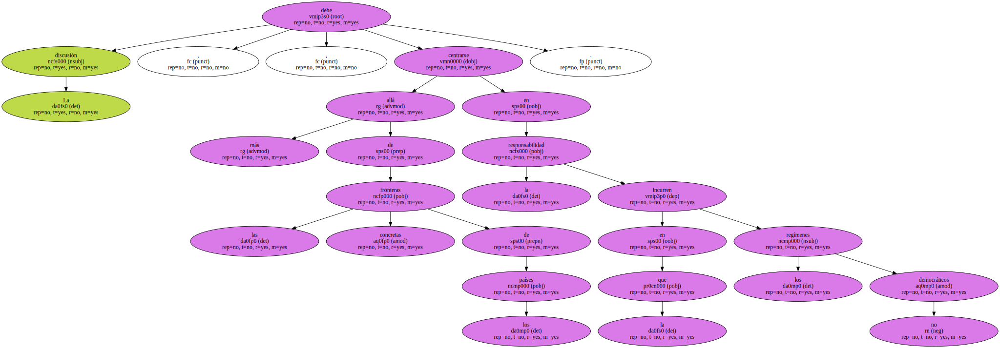Desafortunadamente , una de las cosas más comunes hoy en día es la incoherencia del discurso político.
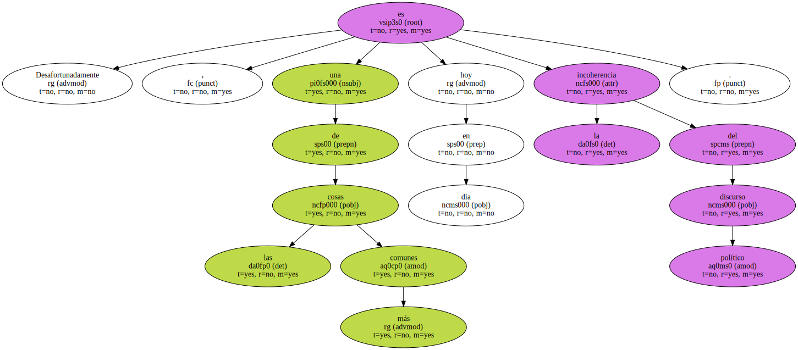De un lado se habla de economía global , de derecho a la injerencia , de solidaridad internacional , de toda una serie de conceptos de nuevo cuño que inducen a pensar en la relativización de la soberanía nacional.
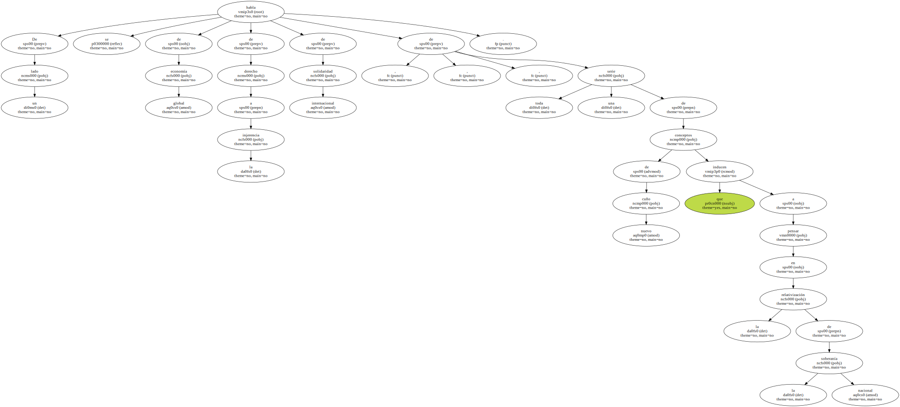No sin razón , puesto que en numerosos aspectos se pueden comprobar cómo los desmanes o errores de unos u otros terminan por afectar a todos.
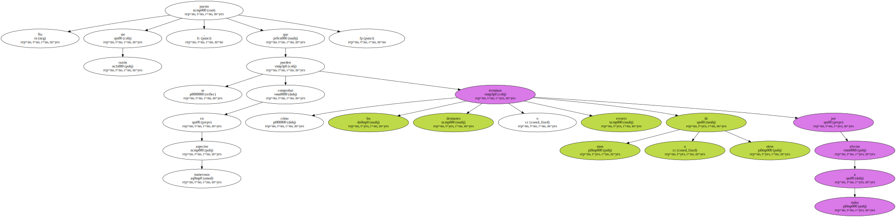La globalización de la economía es un claro ejemplo de cómo los estados tienen una especie de responsabilidad internacional , en tanto que para enderezar una situación que puede afectar a otros estados , se ven obligados a responsabilizarse ante los organismos económicos internacionales que fiscalizan una gestión que en principio correspondería exclusivamente a la esfera de la soberanía nacional.
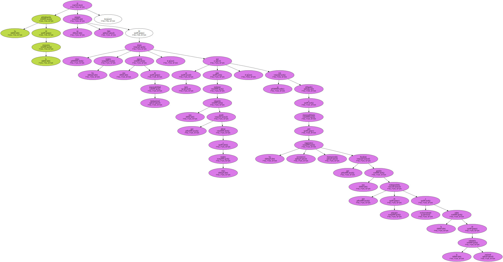Ahora bien , cuando se trata de responsabilidad política , y aquí es donde surge la incoherencia , los enfoques siempre habían sido opuestos al de la globalización , en base al sacrosanto principio de que cada pueblo es dueño de sus destinos , que es una forma de definir la soberanía nacional.
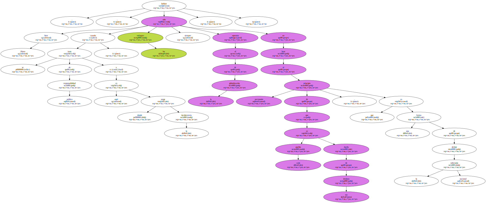La práctica nos demuestra que la realidad es totalmente distinta : si los pueblos fuesen siempre dueños de sus propios destinos , o sea libres , no surgirían gobiernos autoritarios , porque como dijo Sócrates " la libertad no consiste en escoger amo , sino en no tenerlo ".
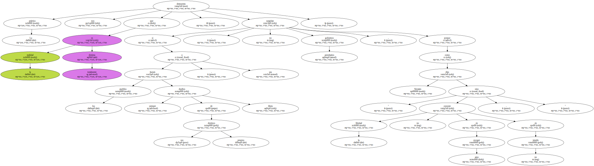En los regímenes autocráticos , son los pueblos los que sufren los destinos que les imponen sus dirigentes , y salvo raras excepciones , los dictadores son inmunes a los castigos de la comunidad internacional.
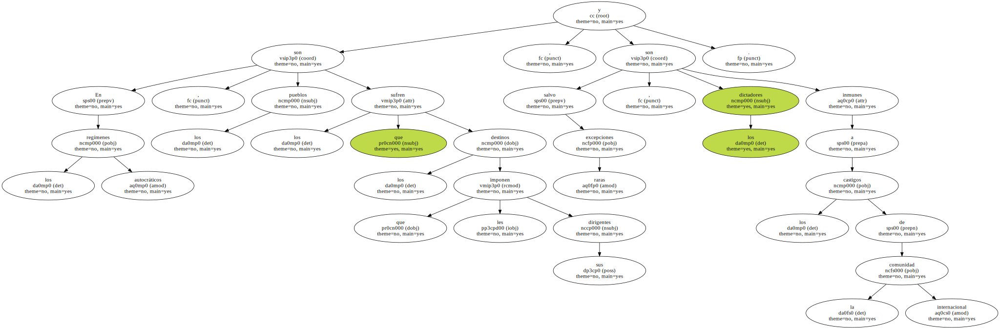Así por ejemplo , rara vez los embargos internacionales acaban con los regímenes autoritarios y la clase dirigente en esos regímenes no suele sufrir las consecuencias de los embargos.
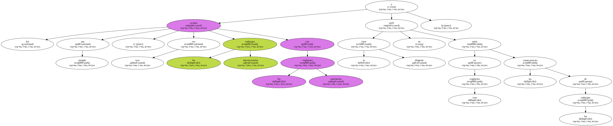Además , en muy escasas ocasiones los dictadores son juzgados por sus pueblos.

Para que esto ocurra tienen que darse tal cantidad de circunstancias que la eventualidad se aproxima más a un milagro que a una posibilidad.
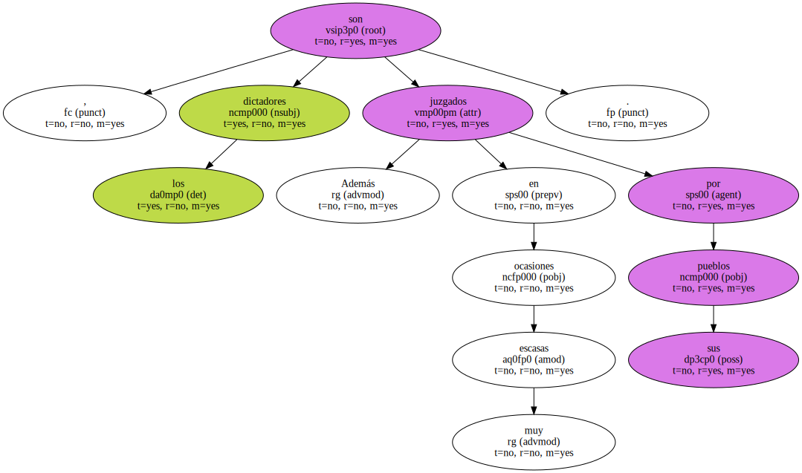Si entramos en la lógica implacable de la globalización del mundo en todas las esferas , y si la política de cada país debe tener forzosamente en cuenta la interdependencia de unos estados con otros , es igualmente lógico que se respete la universalidad de unos derechos que se autoproclamaron universales antes de que se dijese lo mismo de la economía , la tecnología , la sociedad ....
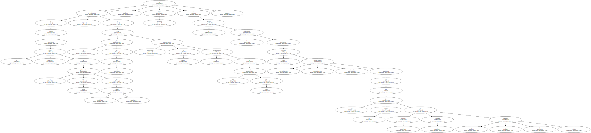Intervenir en la política interna de un Estado en previsión de lo que pueda ocurrir , sería abrir la puerta a la intervención ilimitada y , en consecuencia , justificaríamos a priori intervenciones promovidas por algunos grupos concretos que sólo defienden sus intereses.
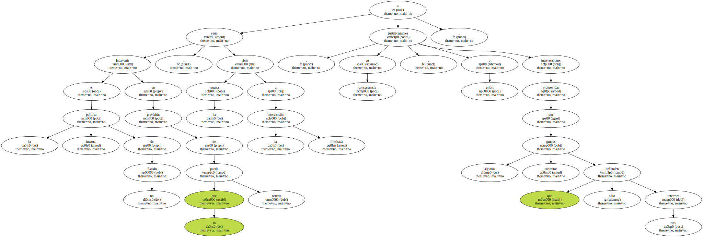Pero intervenir ante la realidad de los hechos va con la esencia misma del respeto a la vida e integridad de las personas.
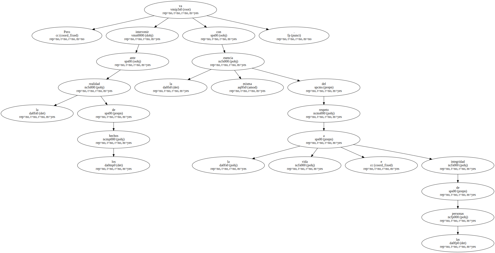No es que se juzgue a una persona concreta de un país concreto , sino que se debe juzgar un comportamiento de desprecio hacia unos valores que nos atañen a todos , porque nadie , esté donde esté , puede sentirse al abrigo de la arbitrariedad , ni hay razón política , económica o social que esté por encima del derecho a la vida y a la dignidad.
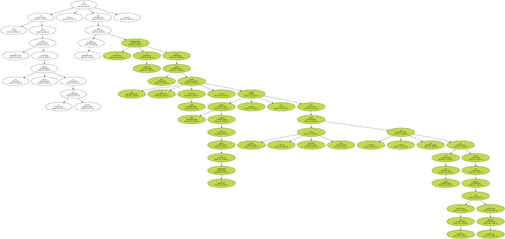Los derechos humanos se respetan o se ignoran.
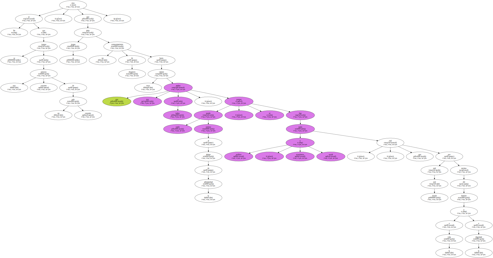No se puede admitir su respeto relativo porque ni la tortura ni la muerte son relativas.
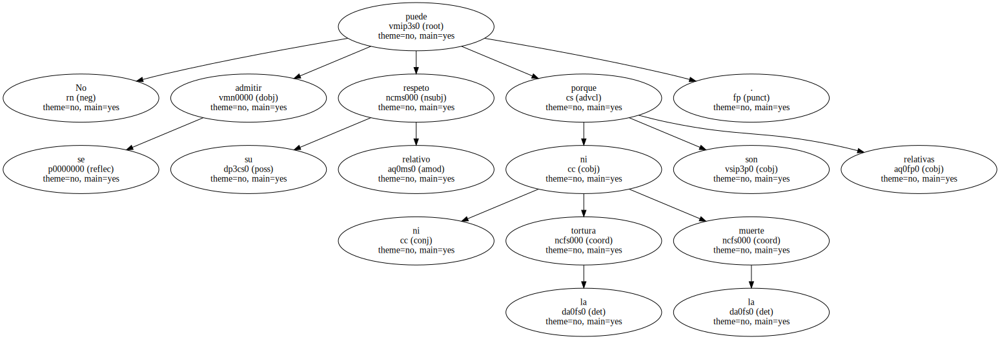Superior al concepto de soberanía nacional , y precisamente por la universalización del mundo actual , está el derecho humano a ser respetado y en el estricto respeto de ese derecho comienza la necesidad universal de exigir responsabilidades a quienes se crean y actúen , en aras de arcanos principios salvadores , en desprecio absoluto de la dignidad humana.
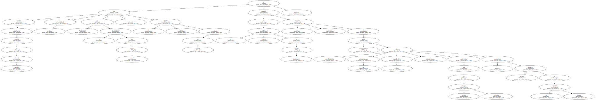